1 Συντεταγμένες στο Επίπεδο
1.1 Άξονας
Ορισμός:
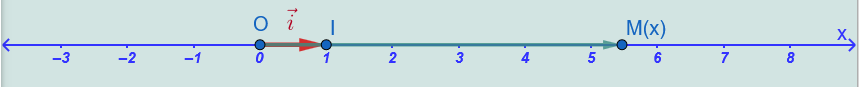
Πάνω σε μια ευθεία \(x'x\) επιλέγουμε δύο σταθερά σημεία \(O\) και \(I\), έτσι ώστε το διάνυσμα \(\vec{OI}\) να έχει μέτρο \(1\) και να κατευθύνεται προς την ημιευθεία \(Ox\). Τότε λέμε ότι έχουμε ορίσει έναν άξονα με αρχή το σημείο \(O\) και μοναδιαίο διάνυσμα το \(\vec{i} = \vec{OI}\), τον οποίο συμβολίζουμε με \(x'x\) ή \((O, \vec{i})\).
Στοιχεία Άξονα:
Αρχή του άξονα: Το σημείο \(O\).
Μοναδιαίο διάνυσμα: Το διάνυσμα \(\vec{i} = \vec{OI}\) με \(|\vec{i}| = 1\).
Θετικός ημιάξονας: Η ημιευθεία \(Ox\).
Αρνητικός ημιάξονας: Η ημιευθεία \(Ox'\).
Τετμημένη Σημείου στον Άξονα: Για κάθε σημείο \(M\) του άξονα \(x'x\), επειδή \(\vec{OM} \parallel \vec{i}\), υπάρχει μοναδικός πραγματικός αριθμός \(x \in \mathbb{R}\) τέτοιος ώστε: \[\vec{OM} = x \cdot \vec{i}\]
Ο αριθμός \(x\) ονομάζεται τετμημένη του σημείου \(M\) και το σημείο συμβολίζεται με \(M(x)\). Αντίστροφα, σε κάθε πραγματικό αριθμό \(x\) αντιστοιχεί μοναδικό σημείο \(M(x)\) πάνω στον άξονα.
1.2 Καρτεσιανό Επίπεδο
Ορισμός:
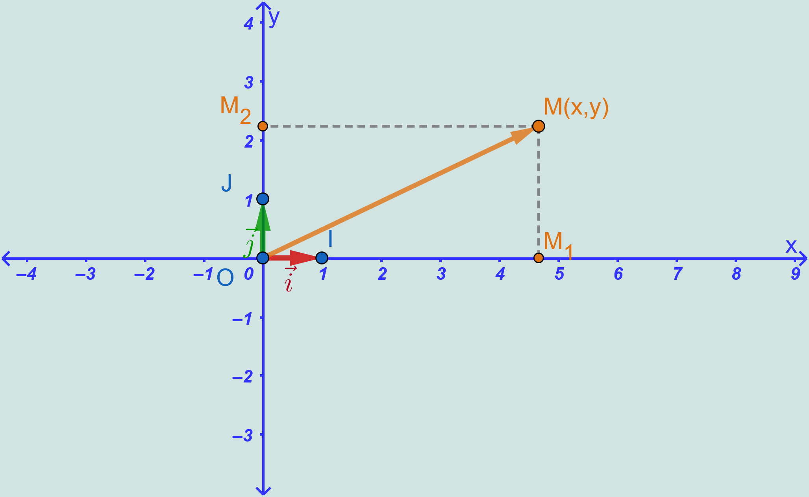
Πάνω σε ένα επίπεδο σχεδιάζουμε δύο κάθετους άξονες \(x'x\) και \(y'y\) με κοινή αρχή το \(O\) και μοναδιαία διανύσματα τα \(\vec{i}\) και \(\vec{j}\) αντίστοιχα (\(|\vec{i}| = |\vec{j}| = 1\) και \(\vec{i} \perp \vec{j}\)). Το σύστημα αυτό ονομάζεται ορθοκανονικό σύστημα συντεταγμένων στο επίπεδο (ή καρτεσιανό επίπεδο) και συμβολίζεται με \(Oxy\).
Στοιχεία Καρτεσιανού Επιπέδου:
Αρχή των αξόνων: Το σημείο \(O(0,0)\).
Άξονας των τετμημένων: Ο οριζόντιος άξονας \(x'x\).
Άξονας των τεταγμένων: Ο κατακόρυφος άξονας \(y'y\).
Βάση του επιπέδου: Το ζεύγος των μοναδιαίων και κάθετων διανυσμάτων \((\vec{i}, \vec{j})\).
Πώς βρίσκουμε τις Συντεταγμένες Σημείου:
Έστω \(M\) ένα τυχαίο σημείο του επιπέδου \(Oxy\). Από το \(M\) φέρνουμε παράλληλη στον άξονα \(y'y\) που τέμνει τον \(x'x\) στο \(M_1(x)\) και παράλληλη στον \(x'x\) που τέμνει τον \(y'y\) στο \(M_2(y)\).
Ο αριθμός \(x\) (τετμημένη του \(M_1\)) λέγεται τετμημένη του σημείου \(M\).
Ο αριθμός \(y\) (τετμημένη του \(M_2\)) λέγεται τεταγμένη του σημείου \(M\).
Το διατεταγμένο ζεύγος \((x, y)\) ονομάζεται συντεταγμένες του σημείου \(M\) και συμβολίζεται με \(M(x, y)\). Σε κάθε σημείο του επιπέδου αντιστοιχεί μοναδικό ζεύγος \((x,y)\) και αντίστροφα.
1.3 Συντεταγμένες Διανύσματος
Ορισμός & Γραμμικός Συνδυασμός των \(\vec{i}\) και \(\vec{j}\):
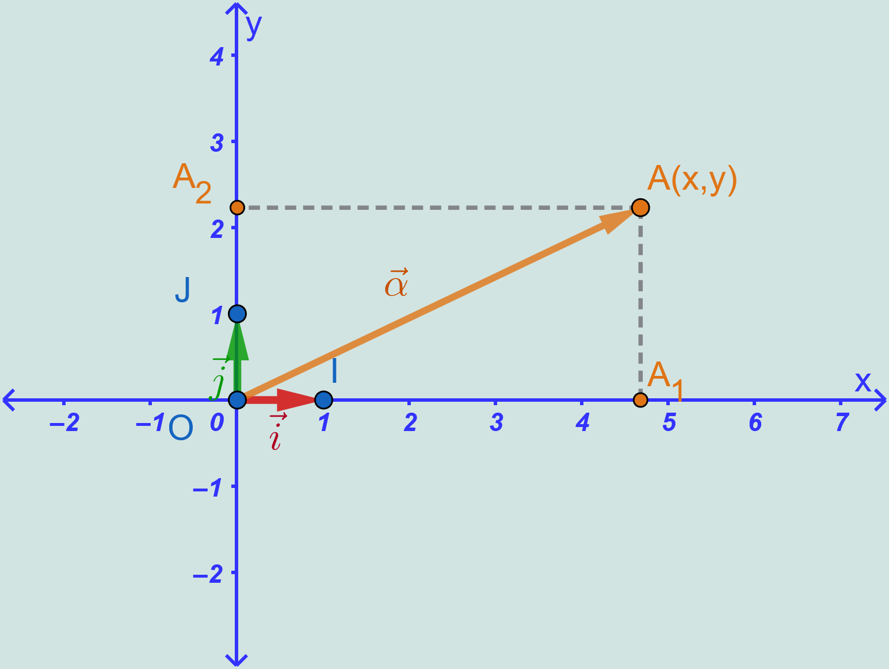
Έστω \(\vec{α}\) ένα διάνυσμα του επιπέδου \(Oxy\). Με αρχή το \(O\), σχεδιάζουμε το διάνυσμα \(\vec{OA} = \vec{α}\). Αν \(A_1, A_2\) είναι οι προβολές του \(A\) στους άξονες \(x'x\) και \(y'y\) αντίστοιχα, ισχύει \(\vec{OA} = \vec{OA_1} + \vec{OA_2}\).
Επειδή \(\vec{OA_1} = x\vec{i}\) και \(\vec{OA_2} = y\vec{j}\), το διάνυσμα \(\vec{α}\) γράφεται κατά μοναδικό τρόπο ως γραμμικός συνδυασμός των διανυσμάτων \(\vec{i}\) και \(\vec{j}\): \[\vec{α} = x\vec{i} + y\vec{j}\]
Τα διανύσματα \(x\vec{i}\) και \(y\vec{j}\) λέγονται συνιστώσες του \(\vec{α}\) κατά τις διευθύνσεις των \(\vec{i}\) και \(\vec{j}\).
Οι μοναδικοί αριθμοί \(x\) και \(y\) λέγονται συντεταγμένες του \(\vec{α}\) (τετμημένη και τεταγμένη αντίστοιχα) και συμβολίζουμε \(\vec{α} = (x, y)\).
Απόδειξη Μοναδικότητας της Έκφρασης \(\vec{α} = x\vec{i} + y\vec{j}\):
Έστω ότι το διάνυσμα \(\vec{α}\) γράφεται και ως \(\vec{α} = x'\vec{i} + y'\vec{j}\). Τότε: \[x\vec{i} + y\vec{j} = x'\vec{i} + y'\vec{j} \iff (x - x')\vec{i} = (y' - y)\vec{j}\]
Αν υποθέσουμε ότι \(x \neq x'\), δηλαδή \(x - x' \neq 0\), τότε προκύπτει: \[\vec{i} = \frac{y' - y}{x - x'}\vec{j}\]
Η σχέση αυτή σημαίνει ότι \(\vec{i} \parallel \vec{j}\), που είναι άτοπο, διότι τα διανύσματα \(\vec{i}\) και \(\vec{j}\) είναι κάθετα. Συνεπώς ισχύει \(x = x'\), οπότε και \((y' - y)\vec{j} = \vec{0} \implies y = y'\) (αφού \(\vec{j} \neq \vec{0}\)).
Άρα η αναπαράσταση κάθε διανύσματος στη μορφή \(\vec{α} = x\vec{i} + y\vec{j}\) είναι μοναδική.
Ισότητα Διανυσμάτων:
Δύο διανύσματα \(\vec{α} = (x_1, y_1)\) και \(\vec{β} = (x_2, y_2)\) είναι ίσα αν και μόνο αν οι αντίστοιχες συντεταγμένες τους είναι ίσες: \[\vec{α} = \vec{β} \iff \begin{cases} x_1 = x_2 \\ y_1 = y_2 \end{cases}\]
Ειδικότερα, για το μηδενικό διάνυσμα ισχύει \(\vec{0} = (0, 0) \iff x = 0\) και \(y = 0\).
1.4 Συντεταγμένες Γραμμικού Συνδυασμού Διανυσμάτων
Έστω τα διανύσματα \(\vec{α} = (x_1, y_1)\) και \(\vec{β} = (x_2, y_2)\) του επιπέδου \(Oxy\) και \(λ, \mu \in \mathbb{R}\).
Άθροισμα & Διαφορά Διανυσμάτων:
\[\vec{α} + \vec{β} = (x_1 + x_2, \, y_1 + y_2) \quad \text{και} \quad \vec{α} - \vec{β} = (x_1 - x_2, \, y_1 - y_2)\]
Απόδειξη:
\(\vec{α} \pm \vec{β} = (x_1\vec{i} + y_1\vec{j}) \pm (x_2\vec{i} + y_2\vec{j}) = (x_1 \pm x_2)\vec{i} + (y_1 \pm y_2)\vec{j} = (x_1 \pm x_2, y_1 \pm y_2)\).
Γινόμενο Αριθμού με Διάνυσμα:
\[λ \vec{α} = (λ x_1, \, λ y_1)\]
Απόδειξη:
\(λ \vec{α} = λ (x_1\vec{i} + y_1\vec{j}) = (λ x_1)\vec{i} + (λ y_1)\vec{j} = (λ x_1, λ y_1)\).
- Συντεταγμένες Γραμμικού Συνδυασμού: \[λ \vec{α} + \mu \vec{β} = (λ x_1 + \mu x_2, \, λ y_1 + \mu y_2)\]
Παραδείγματα
- Αν \(\vec α=(-2,5)\) και \(\vec β=(3,1)\) τότε:
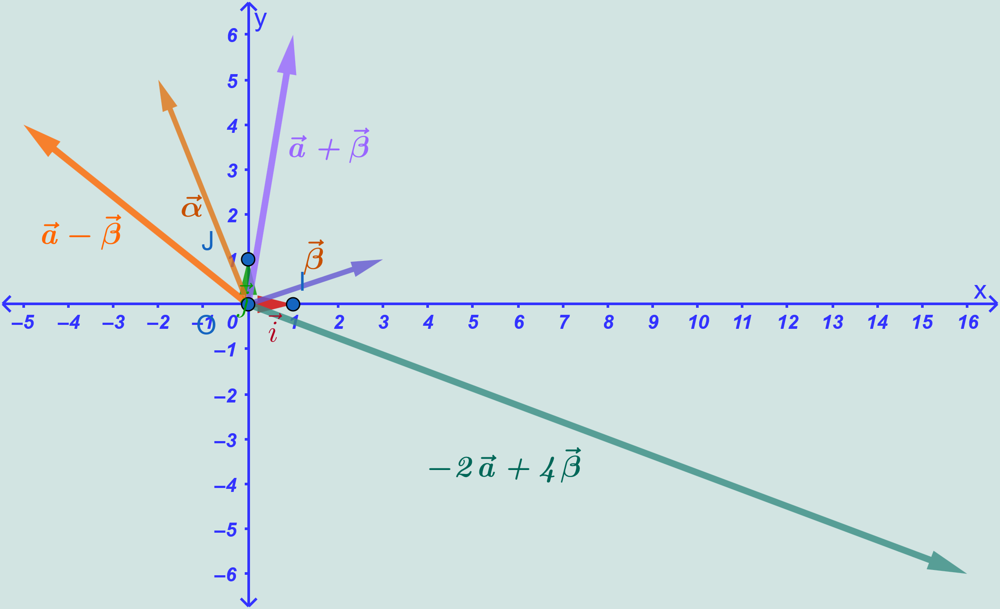
\(\quad \vec α+\vec β=(-2+3, 5+1)=(1,6)\) και \(\vec α-\vecβ=(-2-3, 5-1)=(-5,4)\)
\(\quad -2\vec α+4\vec β=(4,-10)+(12,4)=(16, -6)\)
- Αν \(\vec α=(0,1)\) και \(\vec β=(-1,0)\) τότε:
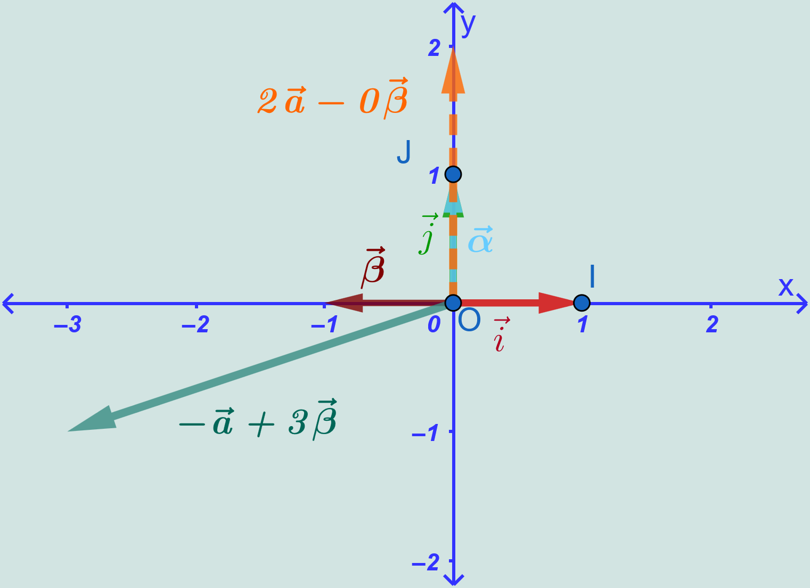
\(\quad -\vec α+3\vec β=(0,-1)+(-3,0)=(-3,-1)\)
\(\quad 2\vec α-0\cdot\vec β=(0,2)-(0,0)=(0,2)\)
1.5 Συντεταγμένες Μέσου Τμήματος
Ορισμός & Τύποι:
Αν \(A(x_1, y_1)\) και \(B(x_2, y_2)\) είναι δύο σημεία του καρτεσιανού επιπέδου, οι συντεταγμένες \((x, y)\) του μέσου \(M\) του ευθύγραμμου τμήματος \(AB\) ισούνται με τον αριθμητικό μέσο όρο των συντεταγμένων των άκρων του: \[x = \frac{x_1 + x_2}{2} \quad \text{και} \quad y = \frac{y_1 + y_2}{2}\]
Απόδειξη:
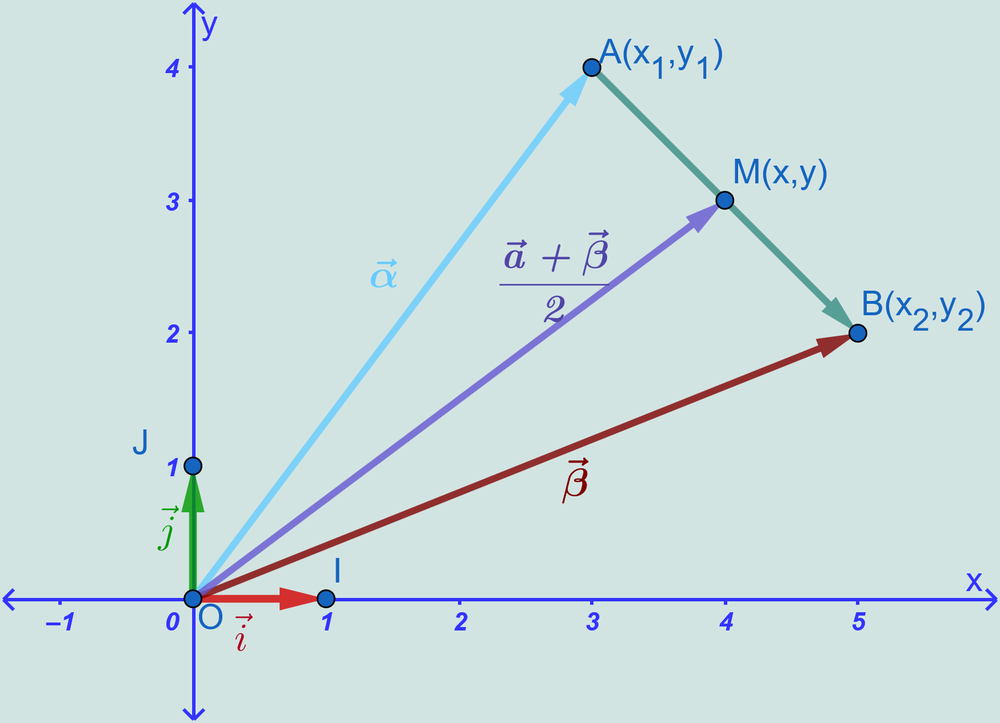
Επειδή το σημείο \(M\) είναι το μέσο του τμήματος \(AB\), από τη διανυσματική ακτίνα μέσου ισχύει: \[\vec{OM} = \frac{1}{2}(\vec{OA} + \vec{OB})\]
Εκφράζοντας τα διανύσματα με τις συντεταγμένες τους, έχουμε:
\[(x, y) = \frac{1}{2}\left[(x_1, y_1) + (x_2, y_2)\right] = \frac{1}{2}(x_1 + x_2, \, y_1 + y_2) = \left(\frac{x_1 + x_2}{2}, \, \frac{y_1 + y_2}{2}\right)\]
Εξισώνοντας τις αντίστοιχες συντεταγμένες προκύπτει \(x = \dfrac{x_1 + x_2}{2}\) και \(y = \dfrac{y_1 + y_2}{2}\).
1.6 Συντεταγμένες Διανύσματος με Γνωστά Άκρα
Σχέσεις - Τύποι:
Οι συντεταγμένες \((x, y)\) του διανύσματος \(\vec{AB}\) με αρχή το σημείο \(A(x_1, y_1)\) και πέρας το σημείο \(B(x_2, y_2)\) δίνονται από τις σχέσεις: \[\vec{AB} = (x_2 - x_1, \, y_2 - y_1)\] \[\text{Τετμημένη } \vec{AB} = x_2 - x_1 = (\text{τετμημένη πέρατος}) - (\text{τετμημένη αρχής})\] \[\text{Τεταγμένη } \vec{AB} = y_2 - y_1 = (\text{τεταγμένη πέρατος}) - (\text{τεταγμένη αρχής})\]
Απόδειξη:
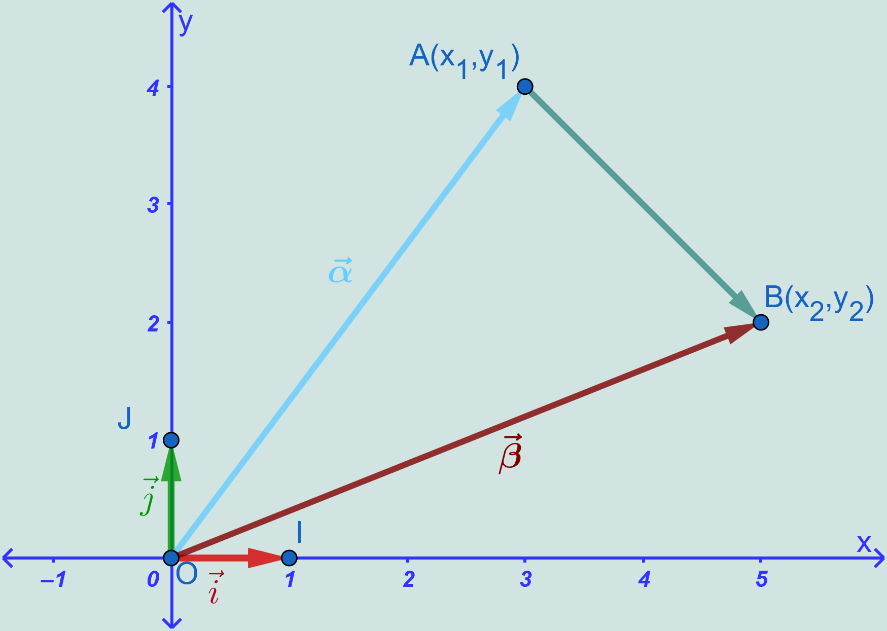
Από την ανάλυση διανύσματος με σημείο αναφοράς την αρχή \(O(0,0)\) ισχύει \(\vec{AB} = \vec{OB} - \vec{OA}\). Επειδή \(\vec{OB} = (x_2, y_2)\) και \(\vec{OA} = (x_1, y_1)\), έχουμε: \[\vec{AB} = (x_2, y_2) - (x_1, y_1) = (x_2 - x_1, \, y_2 - y_1)\]
Παράδειγμα:
Αν \(A(1, 2)\) και \(B(3, 7)\), τότε οι συντεταγμένες του διανύσματος \(\vec{AB}\) είναι:
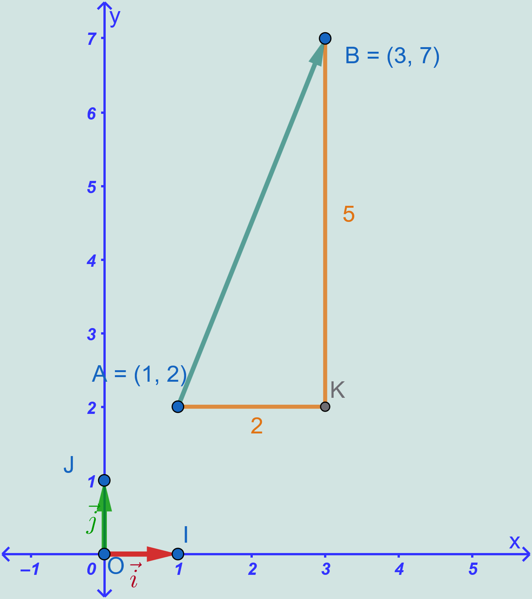
\[\vec{AB} = (3 - 1, \, 7 - 2) = (2, 5)\]
1.7 Μέτρο Διανύσματος & Απόσταση Δύο Σημείων
Ορισμός & Τύπος Μέτρου Διανύσματος:
Το μέτρο ενός διανύσματος \(\vec{α} = (x, y)\) δίνεται από τον τύπο: \[|\vec{α}| = \sqrt{x^2 + y^2}\]
Απόδειξη Τύπου Μέτρου:
Έστω \(\vec{α} = (x, y)\) και \(A(x, y)\) το σημείο με διανυσματική ακτίνα \(\vec{OA} = \vec{α}\). Αν \(A_1, A_2\) είναι οι προβολές του \(A\) στους άξονες \(x'x\) και \(y'y\), τότε τα μήκη των πλευρών του ορθογωνίου \(OA_1AA_2\) είναι \((OA_1) = |x|\) και \((OA_2) = |y|\).
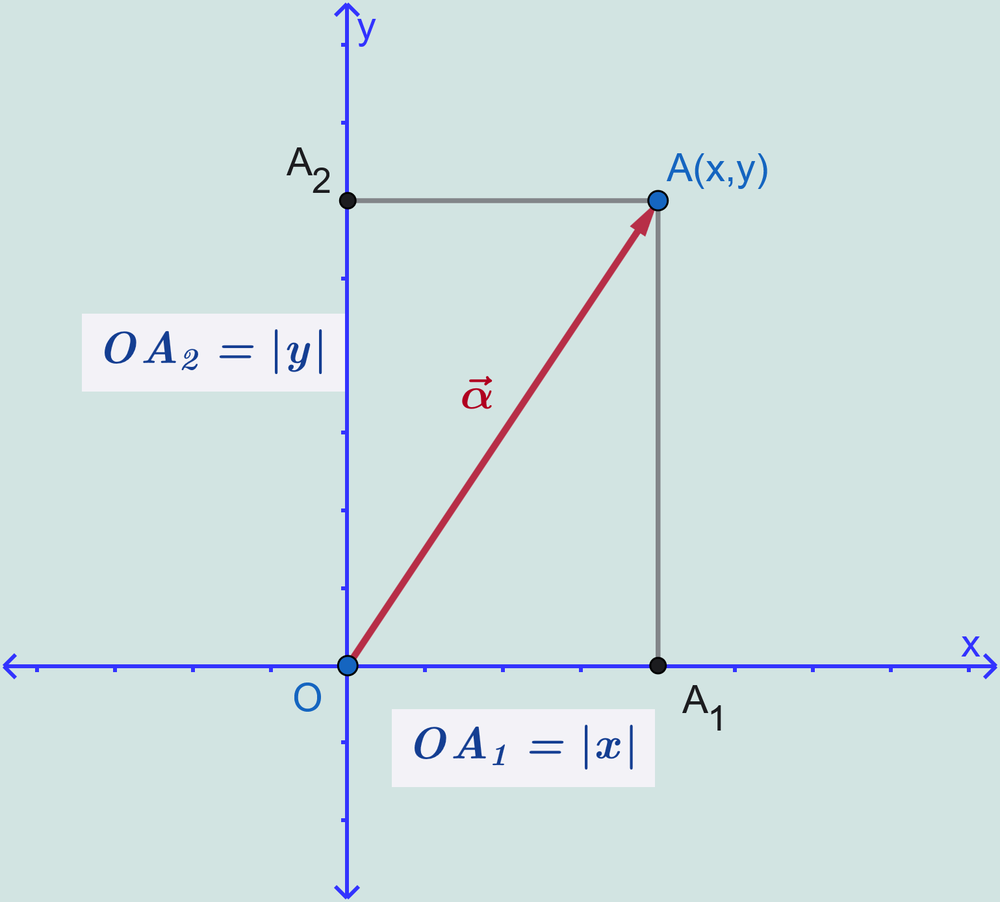
Από το Πυθαγόρειο Θεώρημα στο ορθογώνιο τρίγωνο \(OA_1A\) έχουμε: \[|\vec{α}|^2 = (OA)^2 = (OA_1)^2 + (A_1A)^2 = |x|^2 + |y|^2 = x^2 + y^2\]
Επειδή \(|\vec{α}| \ge 0\), παίρνοντας τετραγωνική ρίζα λαμβάνουμε: \(|\vec{α}| = \sqrt{x^2 + y^2}\).
Απόσταση Δύο Σημείων:
Η γεωμετρική απόσταση \((AB)\) μεταξύ δύο σημείων \(A(x_1, y_1)\) και \(B(x_2, y_2)\) ισούται με το μέτρο του διανύσματος \(\vec{AB} = (x_2 - x_1, y_2 - y_1)\): \[(AB) = |\vec{AB}| = \sqrt{(x_2 - x_1)^2 + (y_2 - y_1)^2}\]
Παραδείγματα:
Αν \(\vec{α} = (5, 12)\), τότε \(|\vec{α}| = \sqrt{5^2 + 12^2} = \sqrt{25 + 144} = \sqrt{169} = 13\).
Η απόσταση των σημείων \(A(1, -2)\) και \(B(4, 2)\) είναι \((AB) = \sqrt{(4 - 1)^2 + (2 - (-2))^2} = \sqrt{3^2 + 4^2} = 5\).
- Εκφώνηση
Ένα τρίγωνο ΑΒΓ έχει κορυφές Α(-10,10), Β(5,-5) και Γ(15,5)
Να υπολογίσετε τις τρεις πλευρές.
Να αποδείξετε ότι είναι ορθογώνιο.
Να υπολογίσετε την διάμεσο και το μέσο της υποτείνουσας.
Λύση:
1. Υπολογισμός των τριών πλευρών
Εφαρμόζουμε τον τύπο της απόστασης \(d = \sqrt{(x_2 - x_1)^2 + (y_2 - y_1)^2}\):
Πλευρά \(AB\): \[(AB) = \sqrt{(5 - (-10))^2 + (-5 - 10)^2} = \sqrt{15^2 + (-15)^2} = \\ \sqrt{225 + 225} = \sqrt{450} = 15\sqrt{2}\]
Πλευρά \(Bγ\): \[(Bγ) = \sqrt{(15 - 5)^2 + (5 - (-5))^2} = \sqrt{10^2 + 10^2} = \sqrt{100 + 100} = \sqrt{200} = 10\sqrt{2}\]
Πλευρά \(Aγ\): \[(Aγ) = \sqrt{(15 - (-10))^2 + (5 - 10)^2} = \sqrt{25^2 + (-5)^2} = \sqrt{625 + 25} = \sqrt{650} = 5\sqrt{26}\]
2. Απόδειξη ότι το τρίγωνο είναι ορθογώνιο
Υπολογίζουμε τα τετράγωνα των μηκών των πλευρών:
\((AB)^2 = 450\)
\((Bγ)^2 = 200\)
\((Aγ)^2 = 650\)
Παρατηρούμε ότι: \[(AB)^2 + (Bγ)^2 = 450 + 200 = 650 = (Aγ)^2\]
Επομένως, ισχύει το αντίστροφο του Πυθαγορείου Θεωρήματος, άρα το τρίγωνο \(ABγ\) είναι ορθογώνιο με ορθή γωνία την \(\widehat{B} = 90^\circ\) και υποτείνουσα την πλευρά \(Aγ\).
(Εναλλακτικά, με διανύσματα: \(\vec{BA} = (-15, 15)\) και \(\vec{Bγ} = (10, 10)\), οπότε \(\vec{BA} \cdot \vec{Bγ} = -15 \cdot 10 + 15 \cdot 10 = 0 \implies \vec{BA} \perp \vec{Bγ}\)).
3. Υπολογισμός του μέσου και της διαμέσου της υποτείνουσας
Η υποτείνουσα είναι το τμήμα \(Aγ\).
Συντεταγμένες του μέσου \(M\) της υποτείνουσας \(Aγ\): \[x_M = \frac{x_A + x_γ}{2} = \frac{-10 + 15}{2} = \frac{5}{2} = 2{,}5\] \[y_M = \frac{y_A + y_γ}{2} = \frac{10 + 5}{2} = \frac{15}{2} = 7{,}5\]
Άρα το μέσο είναι το σημείο: \[M(2{,}5; 7{,}5) \quad \text{ή} \quad M\left(\frac{5}{2}, \frac{15}{2}\right)\]
Μήκος της διαμέσου \(BM\): Σε κάθε ορθογώνιο τρίγωνο, η διάμεσος προς την υποτείνουσα ισούται με το μισό της υποτείνουσας: \[(BM) = \frac{(Aγ)}{2} = \frac{5\sqrt{26}}{2}\]
(Επαλήθευση με τον τύπο της απόστασης από το \(B(5, -5)\)): \[(BM) = \sqrt{\left(\frac{5}{2} - 5\right)^2 + \left(\frac{15}{2} - (-5)\right)^2} = \sqrt{\left(-\frac{5}{2}\right)^2 + \left(\frac{25}{2}\right)^2} =\\ \sqrt{\frac{25 + 625}{4}} = \sqrt{\frac{650}{4}} = \frac{5\sqrt{26}}{2}\]
1.8 Συνθήκη Παραλληλίας Διανυσμάτων
Ορίζουσα Διανυσμάτων:
Ορίζουμε ως ορίζουσα των διανυσμάτων \(\vec{α} = (x_1, y_1)\) και \(\vec{β} = (x_2, y_2)\) τον αριθμό: \[\det(\vec{α}, \vec{β}) = \begin{vmatrix} x_1 & y_1 \\ x_2 & y_2 \end{vmatrix} = x_1 y_2 - x_2 y_1\]
Θεώρημα Συνθήκης Παραλληλίας:
Δύο διανύσματα \(\vec{α} = (x_1, y_1)\) και \(\vec{β} = (x_2, y_2)\) είναι παράλληλα αν και μόνο αν η ορίζουσά τους είναι ίση με το μηδέν: \[\vec{α} \parallel \vec{β} \iff \det(\vec{α}, \vec{β}) = 0 \iff x_1 y_2 - x_2 y_1 = 0\]
Απόδειξη:
Ευθύ (\(\Rightarrow\)): Έστω ότι \(\vec{α} \parallel \vec{β}\).
Αν \(\vec{β} \neq \vec{0}\), υπάρχει \(λ \in \mathbb{R}\) τέτοιο ώστε \(\vec{α} = λ \vec{β} \iff (x_1, y_1) = (λ x_2, λ y_2) \iff x_1 = λ x_2 \text{ και } y_1 = λ y_2\). Τότε: \(\det(\vec{α}, \vec{β}) = x_1 y_2 - x_2 y_1 = (λ x_2) y_2 - x_2 (λ y_2) = 0\).
Αν \(\vec{β} = \vec{0}\), τότε \(x_2 = 0, y_2 = 0\), οπότε \(\det(\vec{α}, \vec{0}) = x_1 \cdot 0 - 0 \cdot y_1 = 0\).
Αντίστροφο (\(\Leftarrow\)): Έστω ότι \(\det(\vec{α}, \vec{β}) = 0 \iff x_1 y_2 - x_2 y_1 = 0 \iff x_1 y_2 = x_2 y_1\).
Αν \(x_2 \neq 0\), τότε \(y_1 = \dfrac{x_1}{x_2} y_2\). Θέτοντας \(λ = \dfrac{x_1}{x_2}\), έχουμε \(x_1 = λ x_2\) και \(y_1 = λ y_2\), άρα \(\vec{α} = λ \vec{β} \implies \vec{α} \parallel \vec{β}\).
Αν \(x_2 = 0\), τότε \(x_1 y_2 = 0 \implies x_1 = 0\) ή \(y_2 = 0\):
Αν \(x_1 = 0\), τότε \(\vec{α} = (0, y_1) \parallel y'y\) και \(\vec{β} = (0, y_2) \parallel y'y\), οπότε \(\vec{α} \parallel \vec{β}\).
Αν \(y_2 = 0\), τότε \(\vec{β} = (0,0) = \vec{0}\), το οποίο είναι παράλληλο σε κάθε διάνυσμα.
Παραδείγματα:
Τα διανύσματα \(\vec{α} = (3, -1)\) και \(\vec{β} = (3, -3)\) δεν είναι παράλληλα διότι \(\det(\vec{α}, \vec{β}) = 3(-3) - 3(-1) = -9 + 3 = -6 \neq 0\).
Τα διανύσματα \(\vec{α} = (2, -4)\) και \(\vec{β} = (-1, 2)\) είναι παράλληλα διότι \(\det(\vec{α}, \vec{β}) = 2(2) - (-1)(-4) = 4 - 4 = 0\).
1.9 Συντελεστής Διεύθυνσης Διανύσματος
Ορισμός:
Έστω \(\vec{α} = (x, y)\) ένα μη μηδενικό διάνυσμα και \(A(x, y)\) το σημείο με \(\vec{OA} = \vec{α}\).
Γωνία διανύσματος: Η γωνία \(θ \in [0, 2\pi)\) που διαγράφει ο θετικός ημιάξονας \(Ox\) αν στραφεί κατά τη θετική φορά μέχρι να συμπέσει με την ημιευθεία \(OA\).
Συντελεστής Διεύθυνσης: Αν το διάνυσμα δεν είναι παράλληλο στον άξονα \(y'y\) (δηλαδή \(x \neq 0\)), ορίζουμε ως συντελεστή διεύθυνσης του \(\vec{α}\) τον πραγματικό αριθμό \(λ_{\vec{α}}\) ή \(λ\): \[λ = \frac{y}{x} = εφ θ \quad (x \neq 0)\]
Ειδικές Περιπτώσεις:
Αν \(y = 0\) (\(x \neq 0\)), το διάνυσμα είναι παράλληλο στον άξονα \(x'x\) και \(λ = 0\).
Αν \(x = 0\), το διάνυσμα είναι παράλληλο στον άξονα \(y'y\) και δεν ορίζεται συντελεστής διεύθυνσης.
Συνθήκη Παραλληλίας μέσω Συντελεστών Διεύθυνσης:
Αν τα διανύσματα \(\vec{α} = (x_1, y_1)\) και \(\vec{β} = (x_2, y_2)\) δεν είναι παράλληλα στον άξονα \(y'y\) (δηλαδή \(x_1 \neq 0\) και \(x_2 \neq 0\)), τότε: \[\vec{α} \parallel \vec{β} \iff λ_1 = λ_2\]
Απόδειξη:
\[\vec{α} \parallel \vec{β} \iff \det(\vec{α}, \vec{β}) = 0 \iff x_1 y_2 - x_2 y_1 = 0 \iff x_1 y_2 = x_2 y_1\]
Διαιρώντας δια του γινομένου \(x_1 x_2 \neq 0\), λαμβάνουμε: \[\frac{y_1}{x_1} = \frac{y_2}{x_2} \iff λ_1 = λ_2\]
Παραδείγματα:
Το διάνυσμα \(\vec{α} = (2, 6)\) έχει συντελεστή διεύθυνσης \(λ = \dfrac{6}{2} = 3\) και σχηματίζει γωνία \(\hat ω\) με \(εφ \hat ω = 3\).
Τα διανύσματα \(\vec{u} = (2, 4)\) και \(\vec{v} = (5, 10)\) έχουν συντελεστές \(λ_1 = \dfrac{4}{2} = 2\) και \(λ_2 = \dfrac{10}{5} = 2\).
Αφού \(λ_1 = λ_2 = 2\), τα διανύσματα είναι παράλληλα (\(\vec{u} \parallel \vec{v}\)).
1.10 Ασκήσεις στις Συντεταγμένες στο Επίπεδο
1.10.1 Ομάδα Α: Συντεταγμένες & Αλγεβρικές Πράξεις Διανυσμάτων
Άσκηση 1: Δίνονται τα διανύσματα \(\vec{α} = (2, -3)\) και \(\vec{β} = (-4, 1)\).
α) Να γραφούν τα διανύσματα ως γραμμικός συνδυασμός των μοναδιαίων διανυσμάτων \(\vec{i}\) και \(\vec{j}\).
β) Να βρεθούν οι συντεταγμένες των διανυσμάτων \(\vec{u} = 3\vec{α} - 2\vec{β}\) και \(\vec{v} = \dfrac{1}{2}\vec{α} + \vec{β}\).
Υπόδειξη
α) \(\vec a=2\vec i-3\vec j\) ………………
β) \(\vec u=3(2,-3)-2(-4,1)=(6,-9)+(8, -2)=(14, -11)\) ………………………
- Άσκηση 2: Αν \(\vec{α} = (x + y, 4)\) και \(\vec{β} = (2, x - y)\), να υπολογιστούν οι πραγματικοί αριθμοί \(x\) και \(y\) ώστε \(\vec{α} = \vec{β}\).
Υπόδειξη
\(\vec a = \vec β \implies \begin{cases} x+y=2 \\ x-y=4 \end{cases} \implies\) ………..
- Άσκηση 3: Δίνονται τα διανύσματα \(\vec{α} = (1, 2)\), \(\vec{β} = (-3, 1)\) και \(\vec{γ} = (5, 3)\). Να εκφράσετε το διάνυσμα \(\vec{γ}\) ως γραμμικό συνδυασμό των \(\vec{α}\) και \(\vec{β}\) (\(\vec{γ} = κ \vec{α} + λ \vec{β}\)).
Υπόδειξη
\(\vec γ=κ\vec α+λ \vec β \implies \begin{cases} 5=κ-3λ \\ 3=2κ+λ \end{cases}\) …………..
- Άσκηση 4: Να λύσετε ως προς το διάνυσμα \(\vec{x}\) τη διανυσματική εξίσωση: \[2(\vec{x} + (1, 4)) - 3(\vec{x} - (2, -1)) = (0, 5)\]
Υπόδειξη
\(2 \vec x +2(1, 4) -3\vec x +3(2, -1)=(0, 5) \implies -\vec x=-(2,8)-(6, -3)+(0, 5) \implies......\)
1.10.2 Ομάδα Β: Συντεταγμένες Διανύσματος με Γνωστά Άκρα & Μέσο Τμήματος
Άσκηση 5: Δίνονται τα σημεία \(A(-2, 3)\) και \(B(4, -1)\).
α) Να υπολογιστούν οι συντεταγμένες του διανύσματος \(\vec{AB}\) και του \(\vec{BA}\).
β) Να βρεθούν οι συντεταγμένες του μέσου \(M\) του ευθύγραμμου τμήματος \(AB\).
Άσκηση 6: Αν το σημείο \(M(1, 4)\) είναι το μέσο του ευθύγραμμου τμήματος \(AB\) και δίνεται το άκρο \(A(-3, 2)\), να βρείτε τις συντεταγμένες του άκρου \(B\).
Υπόδειξη
\(\begin{cases} 1=\dfrac{-3+x_2}{2} \\ 4=\dfrac{2+y_2}{2} \end{cases}\) …….
- Άσκηση 7: Δίνονται οι κορυφές παραλληλογράμμου \(ABCD\): \(A(1, 1)\), \(B(4, 2)\) και \(C(5, 5)\). Να βρείτε τις συντεταγμένες της τέταρτης κορυφής \(D\).
Υπόδειξη
Θα έχει ίσες τις απέναντι πλευρές
\(AD=BC \implies \sqrt{(x_4-1)^2+(y_4-1)^2}=\sqrt{(5-4)^2+(5-2)^2}\)
\(ΑΒ=CD \implies \sqrt{(4-1)^2+(2-1)^2}=\sqrt{(x_4-5)^2+(y_4-5)^2}\)
Λύνουμε το σύστημα
- Εκφώνηση
Δίνεται τρίγωνο \(ABC\) με κορυφές \(A(2, 4)\), \(B(-1, 1)\) και \(C(5, -3)\).
Αν \(D, E, F\) είναι τα μέσα των πλευρών \(BC, CA, AB\) αντίστοιχα, να αποδείξετε ότι τα τρίγωνα \(ABC\) και \(DEF\) έχουν το ίδιο κέντρο βάρους \(G\) και να βρείτε τις συντεταγμένες του.
Λύση
1. Κέντρο βάρους του τριγώνου \(ABC\)
Οι συντεταγμένες του κέντρου βάρους \(G(x_G, y_G)\) ενός τριγώνου με κορυφές \(A(x_A, y_A)\), \(B(x_B, y_B)\) και \(C(x_C, y_C)\) δίνονται από τους τύπους:
\[x_G = \frac{x_A + x_B + x_C}{3}\] \[y_G = \frac{y_A + y_B + y_C}{3}\]
Αντικαθιστούμε τις συντεταγμένες των κορυφών \(A(2, 4)\), \(B(-1, 1)\) και \(C(5, -3)\): \[x_G = \frac{2 + (-1) + 5}{3} = \frac{6}{3} = 2\] \[y_G = \frac{4 + 1 + (-3)}{3} = \frac{2}{3}\]
Άρα, το κέντρο βάρους του τριγώνου \(ABC\) είναι το σημείο: \[G\left(2, \; \frac{2}{3}\right)\]
2. Συντεταγμένες των μέσων \(D, E, F\)
Το σημείο \(D\) είναι το μέσον της πλευράς \(BC\): \[x_D = \frac{x_B + x_C}{2} = \frac{-1 + 5}{2} = \frac{4}{2} = 2\] \[y_D = \frac{y_B + y_C}{2} = \frac{1 + (-3)}{2} = \frac{-2}{2} = -1\]
Άρα: \(D(2, -1)\)
Το σημείο \(E\) είναι το μέσον της πλευράς \(CA\): \[x_E = \frac{x_C + x_A}{2} = \frac{5 + 2}{2} = \frac{7}{2} = 3{,}5\] \[y_E = \frac{y_C + y_A}{2} = \frac{-3 + 4}{2} = \frac{1}{2} = 0{,}5\]
Άρα: \(E\left(\dfrac{7}{2}, \; \dfrac{1}{2}\right)\)
Το σημείο \(F\) είναι το μέσον της πλευράς \(AB\): \[x_F = \frac{x_A + x_B}{2} = \frac{2 + (-1)}{2} = \frac{1}{2} = 0{,}5\] \[y_F = \frac{y_A + y_B}{2} = \frac{4 + 1}{2} = \frac{5}{2} = 2{,}5\]
Άρα: \(F\left(\frac{1}{2}, \; \frac{5}{2}\right)\)
3. Κέντρο βάρους του τριγώνου \(DEF\)
Έστω \(G'\) το κέντρο βάρους του τριγώνου \(DEF\). Οι συντεταγμένες του είναι: \[x_{G'} = \frac{x_D + x_E + x_F}{3} = \frac{2 + \frac{7}{2} + \frac{1}{2}}{3} = \frac{2 + \frac{8}{2}}{3} = \frac{2 + 4}{3} = \frac{6}{3} = 2\]
\[y_{G'} = \frac{y_D + y_E + y_F}{3} = \frac{-1 + \frac{1}{2} + \frac{5}{2}}{3} = \frac{-1 + \frac{6}{2}}{3} = \frac{-1 + 3}{3} = \frac{2}{3}\]
Άρα: \[G'\left(2, \; \frac{2}{3}\right)\]
Συμπέρασμα
Παρατηρούμε ότι οι συντεταγμένες των δύο σημείων ταυτίζονται: \[G \equiv G'\left(2, \; \frac{2}{3}\right)\]
Επομένως, τα τρίγωνα \(ABC\) και \(DEF\) έχουν το ίδιο κέντρο βάρους \(G\left(2, \; \frac{2}{3}\right)\).
(Γενική διανυσματική παρατήρηση: \(\vec{OD} + \vec{OE} + \vec{OF} = \dfrac{\vec{OB}+\vec{OC}}{2} + \dfrac{\vec{OC}+\vec{OA}}{2} + \dfrac{\vec{OA}+\vec{OB}}{2} = \vec{OA} + \vec{OB} + \vec{OC}\), οπότε διαιρώντας με το \(3\) προκύπτει πάντοτε \(\vec{OG'} = \vec{OG}\) για κάθε τρίγωνο).
1.10.3 Ομάδα Γ: Μέτρο Διανύσματος & Απόσταση Σημείων
Άσκηση 9: Να υπολογίσετε το μέτρο των διανυσμάτων:
α) \(\vec{α} = (-6, 8)\)
β) \(\vec{β} = (3, -3)\)
γ) \(\vec{γ} = (\cos\theta, \sin\theta)\) για κάθε \(\theta \in \mathbb{R}\).
Άσκηση 10: Να βρείτε την απόσταση \((AB)\) των σημείων \(A(-1, 5)\) και \(B(3, 2)\).
- Άσκηση 11: Δίνονται τα σημεία \(A(x, 1)\) και \(B(3, 5)\). Να προσδιορίσετε την τιμή του \(x \in \mathbb{R}\) ώστε η απόσταση \((AB)\) να ισούται με \(5\).
Υπόδειξη
\(\sqrt{(3-x)^2+(5-1)^2}=5\)
- Άσκηση 12: Δίνεται διάνυσμα \(\vec{α} = (3, 4)\). Να βρεθεί μοναδιαίο διάνυσμα \(\vec{u}\) (\(|\vec{u}| = 1\)) που να είναι ομόρροπο του \(\vec{α}\).
Υπόδειξη
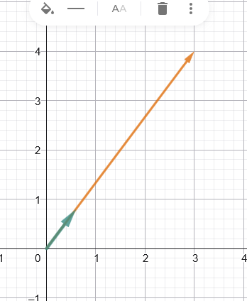
Αν x και y οι συντεταγμένες του μοναδιαίου, τότε θα έχουμε
\(|\vec a|=\sqrt{3^2+4^2}=5\) και \(|\vec u|=1=\sqrt{x^2+y^2}\).
Ακόμη θα ισχύει:
\(\vec a =λ \vec u \implies (3,4)=(λx,λy) \implies 5= \sqrt{(λx)^2+(λy)^2}\) αφού θα είναι ομόρροπα.
\(\implies 5=λ\sqrt{x^2+y^2} \implies 5=λ\cdot 1 \implies λ=5\)
\(\vec a =λ \vec u \implies (3,4)=(λx,λy) \implies 3=λx \ \ και \ \ 4=λy\)
\(x=........... \ \ , \ \ y=.............\)
1.10.4 Ομάδα Δ: Συνθήκη Παραλληλίας & Συνευθειακότητα
Άσκηση 13: Να εξετάσετε αν είναι παράλληλα τα παρακάτω ζεύγη διανυσμάτων:
α) \(\vec{α} = (2, -3)\) και \(\vec{β} = (-6, 9)\)
β) \(\vec{u} = (4, 1)\) και \(\vec{v} = (2, 3)\)
Άσκηση 14: Να βρεθεί η τιμή του \(λ \in \mathbb{R}\) ώστε τα διανύσματα \(\vec{α} = (λ - 1, 2)\) και \(\vec{β} = (3, λ + 4)\) να είναι παράλληλα.
Υπόδειξη
Πρέπει οι συντελεστές διεύθυνσης να είναι ίσοι \(λ_{\vec α}=λ_{\vec β} \implies \dfrac{λ-1}{2}=\dfrac{λ+4}{3} \implies\) ……………..\(λ=-5\) ή \(λ=2\)
- Για \(λ=-5 \implies \vec α= ............... \quad , \quad \vec β= ..........\) και \(\quad \vec α=-2\vec β \quad\) αντίρροπα.
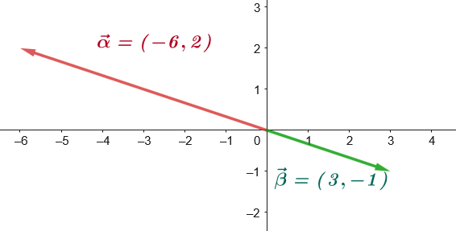
- Για \(λ=2 \implies \vec α= ............... \quad , \quad \vec β= ..........\) και \(\quad \vec α=\dfrac{1}{3}\vec β \quad\) ομόρροπα
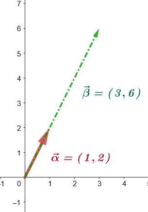
- Εκφώνηση
Να αποδείξετε ότι τα σημεία \(A(1, 2)\), \(B(3, 6)\) και \(Γ(-1, -2)\) είναι συνευθειακά.
Υπόδειξη
\(λ_{ΑΒ}=\dfrac{6-2}{3-1}=2 \ \ , \ \ λ_{ΑΓ}=\dfrac{-2-2}{-1-1}=2\)
- Εκφώνηση
Δίνονται τα σημεία \(A(2, 3)\), \(B(-1, 5)\) και \(Γ(x, 1)\).
Να υπολογίσετε το \(x \in \mathbb{R}\) ώστε τα σημεία \(A, B, Γ\) να σχηματίζουν τρίγωνο (δηλαδή να μην είναι συνευθειακά).
Λύση
Τα σημεία \(A, B, \Gamma\) σχηματίζουν τρίγωνο αν και μόνο αν δεν είναι συνευθειακά.
Αυτό σημαίνει ότι τα διανύσματα \(\vec{AB}\) και \(\vec{A\Gamma}\) δεν πρέπει να είναι παράλληλα (συγγραμμικά), δηλαδή η ορίζουσά τους πρέπει να είναι διάφορη του μηδενός: \[\det(\vec{AB}, \vec{A\Gamma}) \neq 0\]
1: Συντεταγμένες των διανυσμάτων \(\vec{AB}\) και \(\vec{A\Gamma}\)
Για το διάνυσμα \(\vec{AB}\): \[\vec{AB} = (x_B - x_A, \; y_B - y_A) = (-1 - 2, \; 5 - 3) = (-3, \; 2)\]
Για το διάνυσμα \(\vec{A\Gamma}\): \[\vec{A\Gamma} = (x_\Gamma - x_A, \; y_\Gamma - y_A) = (x - 2, \; 1 - 3) = (x - 2, \; -2)\]
2: Υπολογισμός της ορίζουσας
Η ορίζουσα των διανυσμάτων είναι: \[\det(\vec{AB}, \vec{A\Gamma}) = \begin{vmatrix} -3 & 2 \\ x - 2 & -2 \end{vmatrix}\]
Αναπτύσσουμε την ορίζουσα: \[\det(\vec{AB}, \vec{A\Gamma}) = (-3) \cdot (-2) - 2 \cdot (x - 2) = 6 - 2x + 4 = 10 - 2x\]
3: Συνθήκη μη συνευθειακότητας
Για να σχηματίζουν τα σημεία τρίγωνο, απαιτούμε: \[\det(\vec{AB}, \vec{A\Gamma}) \neq 0\] \[10 - 2x \neq 0\] \[-2x \neq -10\] \[x \neq 5\]
Συμπέρασμα
Τα σημεία \(A, B, \Gamma\) σχηματίζουν τρίγωνο για κάθε: \[x \in \mathbb{R} \setminus \{5\}\] (δηλαδή για οποιονδήποτε πραγματικό αριθμό \(x\) εκτός από το \(5\)).
1.10.5 Ομάδα Ε: Συντελεστής Διεύθυνσης & Γεωμετρικές Εφαρμογές
Άσκηση 17: Να υπολογίσετε τον συντελεστή διεύθυνσης \(λ\) και τη γωνία \(\phi\) που σχηματίζουν με τον θετικό ημιάξονα \(Ox\) τα διανύσματα:
α) \(\vec{α} = (2, 2)\)
β) \(\vec{β} = (-\sqrt{3}, 1)\)
Άσκηση 18: Δίνονται τα σημεία \(A(2, 5)\) και \(B(6, 13)\).
α) Να βρείτε τον συντελεστή διεύθυνσης του διανύσματος \(\vec{AB}\).
β) Να βρείτε τον συντελεστή διεύθυνσης της ευθείας που διέρχεται από τα σημεία \(A\) και \(B\).
Άσκηση 19: Δίνονται τα διανύσματα \(\vec{α} = (κ + 1, 2)\) και \(\vec{β} = (4, κ - 1)\) με \(κ \neq -1\) και \(κ \neq 1\). Να υπολογίσετε το \(κ\) ώστε οι συντελεστές διεύθυνσης των διανυσμάτων να ικανοποιούν τη σχέση \(λ_{\vec{α}} = λ_{\vec{β}}\).
- Εκφώνηση
Δίνεται κύκλος με κέντρο το σημείο \(K(2, 3)\) και ακτίνα \(R = 5\).
α) Να εξετάσετε αν τα σημεία \(A(5, 7)\) και \(B(-1, -1)\) ανήκουν στον κύκλο.
β) Να αποδείξετε ότι το τμήμα \(AB\) είναι διάμετρος του κύκλου, δείχνοντας ότι το \(K\) είναι το μέσο του \(AB\).
Λύση
α) Εξέταση αν τα σημεία \(A\) και \(B\) ανήκουν στον κύκλο
Ένα σημείο ανήκει στον κύκλο αν και μόνο αν η απόστασή του από το κέντρο \(K(2, 3)\) ισούται με την ακτίνα \(R = 5\).
Χρησιμοποιούμε τον τύπο της απόστασης δύο σημείων: \[d = \sqrt{(x_2 - x_1)^2 + (y_2 - y_1)^2}\]
Για το σημείο \(A(5, 7)\): \[(KA) = \sqrt{(5 - 2)^2 + (7 - 3)^2} = \sqrt{3^2 + 4^2} = \sqrt{9 + 16} = \sqrt{25} = 5\]
Επειδή \((KA) = R = 5\), το σημείο \(A\) ανήκει στον κύκλο.
Για το σημείο \(B(-1, -1)\): \[(KB) = \sqrt{(-1 - 2)^2 + (-1 - 3)^2} = \sqrt{(-3)^2 + (-4)^2} = \sqrt{9 + 16} = \sqrt{25} = 5\]
Επειδή \((KB) = R = 5\), και το σημείο \(B\) ανήκει στον κύκλο.
β) Απόδειξη ότι το τμήμα \(AB\) είναι διάμετρος του κύκλου
Ένα ευθύγραμμο τμήμα \(AB\) είναι διάμετρος του κύκλου αν:
Τα άκρα του \(A\) και \(B\) ανήκουν στον κύκλο (το δείξαμε στο ερώτημα α).
Το κέντρο \(K\) του κύκλου είναι το μέσο του τμήματος \(AB\).
Υπολογίζουμε τις συντεταγμένες \((x_M, y_M)\) του μέσου \(M\) του τμήματος \(AB\): \[x_M = \frac{x_A + x_B}{2} = \frac{5 + (-1)}{2} = \frac{4}{2} = 2\] \[y_M = \frac{y_A + y_B}{2} = \frac{7 + (-1)}{2} = \frac{6}{2} = 3\]
Άρα το μέσο του \(AB\) είναι το σημείο \(M(2, 3)\), το οποίο ταυτίζεται με το κέντρο \(K(2, 3)\).
Επομένως, το \(K\) είναι το μέσο του \(AB\), πράγμα που αποδεικνύει ότι το ευθύγραμμο τμήμα \(AB\) είναι διάμετρος του κύκλου.
(Εναλλακτικά μόνο με αποστάσεις: \((AB) = \sqrt{(-1-5)^2 + (-1-7)^2} = \sqrt{36 + 64} = 10 = 2R\), και αφού \((KA) + (KB) = 5 + 5 = 10 = (AB)\), τα σημεία \(A, K, B\) είναι συνευθειακά και το \(AB\) είναι διάμετρος).
- Εκφώνηση
Δίνεται το διάνυσμα \(\vec{u} = (\mu^2 - 9, \; \mu^2 - 5\mu + 6)\) με \(\mu \in \mathbb{R}\). Να βρείτε την τιμή του \(\mu\) ώστε:
\(\vec{u} = \vec{0}\)
\(\vec{u} \neq \vec{0}\) και \(\vec{u} \parallel y'y\) (παράλληλο στον άξονα \(y'y\))
Λύση
- Για να είναι \(\vec{u} = \vec{0}\), πρέπει και οι δύο συντεταγμένες να είναι μηδέν ταυτόχρονα: \[\begin{cases} \mu^2 - 9 = 0 \implies \mu = 3 \ \text{ή} \ \mu = -3 \\ \mu^2 - 5\mu + 6 = 0 \implies (\mu - 2)(\mu - 3) = 0 \implies \mu = 2 \ \text{ή} \ \mu = 3 \end{cases}\]
Η κοινή λύση είναι \(\mu = 3\).
- Για να είναι \(\vec{u} \neq \vec{0}\) και \(\vec{u} \parallel y'y\), πρέπει η τετμημένη του να είναι μηδέν και η τεταγμένη του μη μηδενική: \[x_{\vec{u}} = 0 \iff \mu = \pm 3 \quad \text{και} \quad y_{\vec{u}} \neq 0 \iff \mu \neq 2 \ \text{και} \ \mu \neq 3\]
Επομένως, απορρίπτεται το \(\mu = 3\) και δεκτή τιμή είναι η \(\mu = -3\).
- Εκφώνηση
Δίνονται τα διανύσματα \(\vec{\alpha} = (κ^2 - 4κ + 3, \; κ^2 - 1)\) και \(\vec{\beta} = (2κ - 2, \; 3κ - 3)\) με \(κ \in \mathbb{R}\). Να βρεθεί η τιμή του \(κ\) ώστε \(\vec{\alpha} = \vec{\beta}\).
Λύση
Δύο διανύσματα είναι ίσα όταν έχουν ίσες αντίστοιχες συντεταγμένες: \[\begin{cases} κ^2 - 4κ + 3 = 2κ - 2 \\ κ^2 - 1 = 3κ - 3 \end{cases}\]
Από την πρώτη εξίσωση: \[κ^2 - 6κ + 5 = 0 \implies (κ - 1)(κ - 5) = 0 \implies κ = 1 \ \text{ή} \ κ = 5\]
Από τη δεύτερη εξίσωση: \[κ^2 - 3κ + 2 = 0 \implies (κ - 1)(κ - 2) = 0 \implies κ = 1 \ \text{ή} \ κ = 2\]
Η κοινή λύση και των δύο εξισώσεων είναι \(κ = 1\).
- Εκφώνηση
Να βρείτε τον πραγματικό αριθμό \(t\), ώστε τα διανύσματα \(\vec{u} = (t, 2)\) και \(\vec{v} = (8, t)\) να είναι ομόρροπα.
Λύση
Δύο διανύσματα είναι ομόρροπα αν και μόνο αν υπάρχει \(\lambda > 0\) τέτοιο ώστε \(\vec{v} = \lambda \vec{u}\).
Επίσης, αφού είναι παράλληλα, η ορίζουσά τους είναι μηδέν: \[\det(\vec{u}, \vec{v}) = 0 \iff \begin{vmatrix} t & 2 \\ 8 & t \end{vmatrix} = 0 \iff t^2 - 16 = 0 \iff t = 4 \ \text{ή} \ t = -4\]
Για \(t = 4\): \(\vec{u} = (4, 2)\) και \(\vec{v} = (8, 4) = 2\vec{u}\) (\(\lambda = 2 > 0\)), άρα είναι ομόρροπα.
Για \(t = -4\): \(\vec{u} = (-4, 2)\) και \(\vec{v} = (8, -4) = -2\vec{u}\) (\(\lambda = -2 < 0\)), άρα είναι αντίρροπα.
Συνεπώς, η δεκτή τιμή είναι \(t = 4\).
- Εκφώνηση
Αν \(\vec{w} = (-5, 12)\), να βρείτε όλα τα διανύσματα που είναι συγγραμμικά με το \(\vec{w}\) και έχουν τριπλάσιο μέτρο από αυτό.
Λύση
Έστω \(\vec{z}\) το ζητούμενο διάνυσμα. Επειδή \(\vec{z} \parallel \vec{w}\), υπάρχει \(k \in \mathbb{R}\) τέτοιο ώστε \(\vec{z} = k\vec{w}\).
Για τα μέτρα ισχύει: \[|\vec{z}| = 3|\vec{w}| \iff |k| \cdot |\vec{w}| = 3|\vec{w}| \iff |k| = 3 \iff k = 3 \ \text{ή} \ k = -3\]
Αν \(k = 3\) (ομόρροπο): \(\vec{z}_1 = 3(-5, 12) = (-15, 36)\)
Αν \(k = -3\) (αντίρροπο): \(\vec{z}_2 = -3(-5, 12) = (15, -36)\)
Τα ζητούμενα διανύσματα είναι τα \((-15, 36)\) και \((15, -36)\).
- Εκφώνηση
Σε καρτεσιανό σύστημα συντεταγμένων, οι τετμημένες δύο σημείων \(P\) και \(Q\) είναι οι ρίζες της εξίσωσης \(x^2 - (2\alpha^2 - 5\alpha - 1)x - 9 = 0\). Να βρείτε τις τιμές του \(\alpha \in \mathbb{R}\), ώστε το μέσο του τμήματος \(PQ\) να έχει τετμημένη ίση με \(3\).
Λύση
Η διακρίνουσα της εξίσωσης είναι \(\Delta = (2\alpha^2 - 5\alpha - 1)^2 - 4(1)(-9) = (2\alpha^2 - 5\alpha - 1)^2 + 36 > 0\) για κάθε \(\alpha \in \mathbb{R}\), άρα η εξίσωση έχει πάντα δύο πραγματικές και άνισες ρίζες \(x_1, x_2\).
Από τους τύπους Vieta, το άθροισμα των ριζών είναι: \[S = x_1 + x_2 = 2\alpha^2 - 5\alpha - 1\]
Η τετμημένη του μέσου \(M\) του τμήματος \(PQ\) δίνεται από τον τύπο: \[x_M = \frac{x_1 + x_2}{2} = 3 \iff x_1 + x_2 = 6\]
Άρα: \[2\alpha^2 - 5\alpha - 1 = 6 \iff 2\alpha^2 - 5\alpha - 7 = 0\]
Λύνουμε το τριώνυμο: \[\Delta_\alpha = (-5)^2 - 4(2)(-7) = 25 + 56 = 81\] \[\alpha = \frac{5 \pm 9}{4} \implies \alpha = \frac{7}{2} = 3{,}5 \quad \text{ή} \quad \alpha = -1\]
- Εκφώνηση
Δίνονται τέσσερα σημεία \(K(x_1, y_1), L(x_2, y_2), M(x_3, y_3), N(x_4, y_4)\). Να βρείτε την αναγκαία και ικανή συνθήκη μεταξύ των συντεταγμένων τους ώστε τα σημεία αυτά να αποτελούν τα μέσα των διαδοχικών πλευρών ενός κυρτού τετραπλεύρου \(ABCD\).
Λύση
Έστω κυρτό τετράπλευρο \(ABCD\) και \(K, L, M, N\) τα μέσα των \(AB, BC, CD, DA\) αντίστοιχα.
Από το θεώρημα Varignon, το τετράπλευρο που σχηματίζεται ενώνοντας τα μέσα των διαδοχικών πλευρών οποιουδήποτε τετραπλεύρου είναι πάντα παραλληλόγραμμο (αφού \(\vec{KL} = \frac{1}{2}\vec{AC} = \vec{NM}\)).
Επομένως, τα σημεία \(K, L, M, N\) είναι μέσα των πλευρών τετραπλεύρου αν και μόνο αν το \(KLMN\) είναι παραλληλόγραμμο, δηλαδή: \[\vec{KL} = \vec{NM}\]
Αναλύοντας σε συντεταγμένες: \[\begin{cases} x_2 - x_1 = x_3 - x_4 \\ y_2 - y_1 = y_3 - y_4 \end{cases} \iff \begin{cases} x_1 + x_3 = x_2 + x_4 \\ y_1 + y_3 = y_2 + y_4 \end{cases}\]
Δηλαδή, τα αθροίσματα των συντεταγμένων των απέναντι κορυφών πρέπει να είναι ίσα (οι διαγώνιοι \(KM\) και \(LN\) έχουν κοινό μέσο).
- Εκφώνηση
Για οποιουδήποτε πραγματικούς αριθμούς \(u_1, u_2, v_1, v_2, x, y\), να αποδείξετε γεωμετρικά ότι: \[\sqrt{(x - u_1)^2 + (y - v_1)^2} + \sqrt{(x - u_2)^2 + (y - v_2)^2} \ge \sqrt{(u_2 - u_1)^2 + (v_2 - v_1)^2}\]
Λύση
Θεωρούμε στο καρτεσιανό επίπεδο τα σημεία:
\(M(x, y)\)
\(A(u_1, v_1)\)
\(B(u_2, v_2)\)
Από τον τύπο της απόστασης δύο σημείων έχουμε:
\((MA) = \sqrt{(x - u_1)^2 + (y - v_1)^2}\)
\((MB) = \sqrt{(x - u_2)^2 + (y - v_2)^2}\)
\((AB) = \sqrt{(u_2 - u_1)^2 + (v_2 - v_1)^2}\)
Από την τριγωνική ανισότητα για τα σημεία \(M, A, B\), γνωρίζουμε ότι για οποιοδήποτε τρίγωνο (ή εκφυλισμένο τρίγωνο σε ευθεία) ισχύει: \[(MA) + (MB) \ge (AB)\]
Αντικαθιστώντας τις παραστάσεις των αποστάσεων, προκύπτει άμεσα η ζητούμενη ανισότητα. Η ισότητα ισχύει όταν το σημείο \(M\) ανήκει στο ευθύγραμμο τμήμα \(AB\).
- Εκφώνηση
Έστω δύο μη συγγραμμικά διανύσματα \(\vec{u}\) και \(\vec{v}\). Να αποδείξετε ότι αν ένα διάνυσμα \(\vec{d}\) γράφεται ως γραμμικός συνδυασμός τους, η γραφή αυτή είναι μοναδική.
Λύση
Υποθέτουμε ότι το διάνυσμα \(\vec{d}\) εκφράζεται με δύο τρόπους ως γραμμικός συνδυασμός των \(\vec{u}\) και \(\vec{v}\): \[\vec{d} = x_1\vec{u} + y_1\vec{v} \quad \text{και} \quad \vec{d} = x_2\vec{u} + y_2\vec{v} \quad (x_1, x_2, y_1, y_2 \in \mathbb{R})\]
Εξισώνοντας τις δύο εκφράσεις: \[x_1\vec{u} + y_1\vec{v} = x_2\vec{u} + y_2\vec{v}\]
Μεταφέρουμε όλους τους όρους στο αριστερό μέλος: \[(x_1 - x_2)\vec{u} + (y_1 - y_2)\vec{v} = \vec{0}\]
Επειδή τα διανύσματα \(\vec{u}\) και \(\vec{v}\) είναι μη συγγραμμικά, είναι γραμμικώς ανεξάρτητα, πράγμα που σημαίνει ότι ο μόνος γραμμικός συνδυασμός τους που δίνει το μηδενικό διάνυσμα είναι αυτός με μηδενικούς συντελεστές: \[\begin{cases} x_1 - x_2 = 0 \implies x_1 = x_2 \\ y_1 - y_2 = 0 \implies y_1 = y_2 \end{cases}\]
Άρα οι συντελεστές ταυτίζονται, πράγμα που αποδεικνύει ότι η έκφραση είναι μοναδική.
Εύχομαι
ΚΑΛΗ ΜΕΛΕΤΗ!